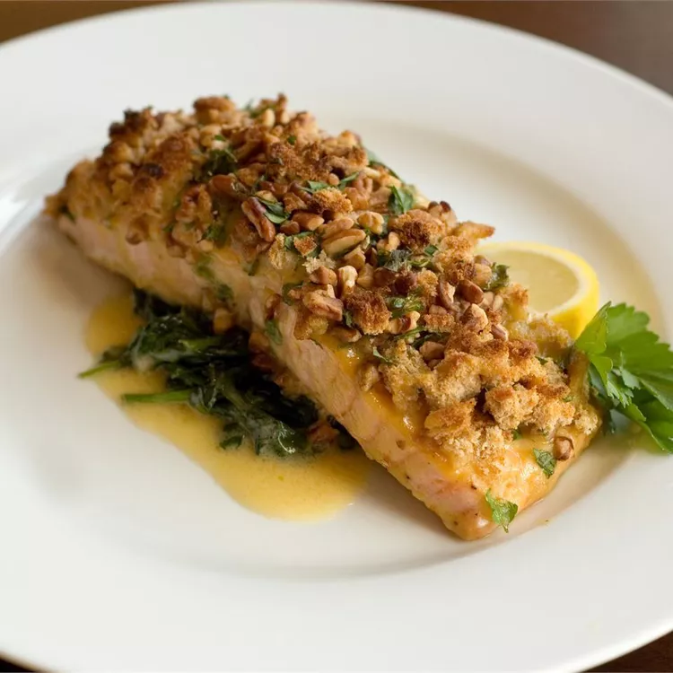

Alaska Salmon

Description
Baked salmon makes an excellent main course!
Ingredients
- 3 tablespoons Dijon mustard
- 3 tablespoons butter, melted
- 5 teaspoons honey
Steps
- Preheat the oven to 400 degrees
- Season each salmon fillet with salt and pepper
- Bake for 10 minutes per inch of thickness